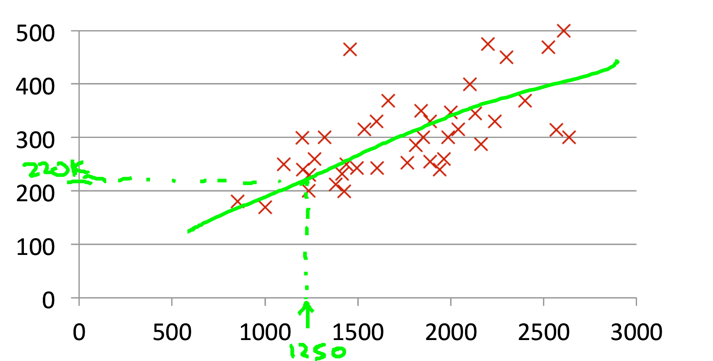
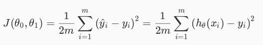
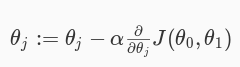
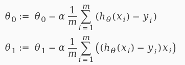
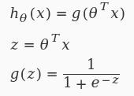
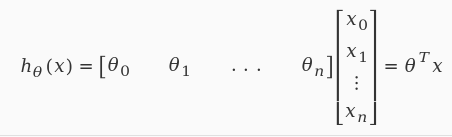

Machine learning and content management
bit.ly/ffwbg-ml
Slides are hosted on github, press 's' if you want to read speaker notes too.
About myself
Valery "valthebald" Lourie
Core mentoring coordinatorBulgaria DUG
 https://www.facebook.com/bulgaria.dug/
https://www.facebook.com/bulgaria.dug/
Agenda
- What is machine learning
- Task types
- Neural networks
- Stochastic gradient descent
- Online learning
- References
The task: CTR
Variables
- Visitor demographics (country/language)
- Time (weekday/hour)
- Previous history of actions
- Current page data (taxonomy)
- Update date of the content
What is machine learning
Arthur Samuel:Field of study that gives computers the ability to learn without being explicitly programmed
Tom Mitchell:
A computer program is said to learn from experience E with respect to some class of tasks T and performance measure P, if its performance at tasks in T, as measured by P, improves with experience E.
Supervised learning
- Regression
- Classification
Unsupervised learning
- Clustering
- Dimension reduction
- Anomaly detection
Learning flow

Linear regression
Hypothesis
h = θ0 + θ1 * XLinear regression
Hypothesis
h = θ0 + θ1 * XCost function
Gradient descent

Gradient descent
Repeat until convergence
Classification problem

More features!
Less features!

Bias vs variance

Validating the model
- Training set: 60%
- Cross validation set: 20%
- Test set: 20%
- Optimize the parameters in Θ using the training set for each polynomial degree.
- Find polynomial degree with least error using cross validation
- Estimate generalization error using test set
Working with large data set
Stochastic gradient descent
- Shuffle training set
- Perform gradient descent for single example
- Choose low α!
Working with large data set
Online learning
- Process training examples as they go
- Adjust parameters θ after every example
- Throw examples immediately
- Bonus: adjust to changing users preferences
The task: what's missing?
Variables
- Visitor demographics (country/language)
- Time (weekday/hour)
- Previous history of actions
- Current page data (taxonomy)
- Update date of the content
Split test and feedback
The task: what's missing?
Variables
- Visitor demographics (country/language)
- Time (weekday/hour)
- Previous history of actions
- Current page data (taxonomy)
- Update date of the content